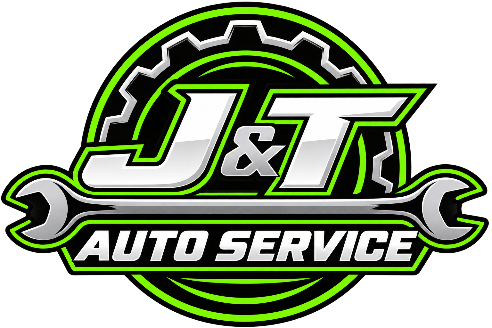
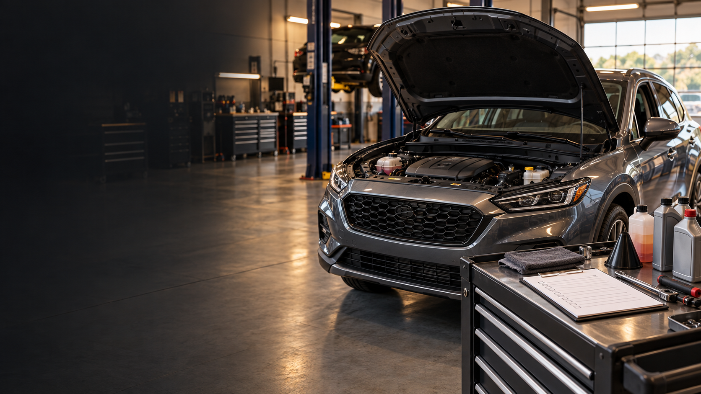

Mileage + known history
Current mileage and the last services you remember are enough to begin—even if the record is incomplete.

Call J&TPreventive maintenance in Bowling Green, OH
Routine service is easier to handle when you know what is due, what can wait, and what deserves attention now.

When nothing is broken—but something may be due
Maintenance is different from repair: the goal is to stay ahead of problems without treating every item like an emergency. Mileage, service history, upcoming travel, and any new changes give J&T the context.
Useful clues
Current mileage and the last services you remember are enough to begin—even if the record is incomplete.
A long trip, seasonal driving, or a dashboard maintenance reminder can help frame priorities.
New noises, lights, leaks, tire wear, or changes in how the vehicle drives belong in the maintenance conversation too.
Preventive Maintenance FAQ
Start with the vehicle, mileage and any service history you have. J&T can use that context to discuss what deserves attention without requiring you to know the schedule by memory.
Your vehicle year, make, model, current mileage and any recent service you remember give the shop useful context.
Have the year, make, model and approximate mileage ready. If you remember recent oil, tire, brake, battery, fluid or filter service, mention that too.
Preventive maintenance
Tell J&T what maintenance is due—or what you are not sure about—and start there.